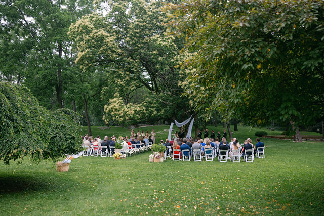

The guest list
Discuss your approximate numbers and the permitted layouts for the spaces you are considering.
Rental details
A wedding setting is only part of the decision. Be clear about the venue, the services you arrange and the terms you need before booking.

Justace Faith PhotoThe rental, clearly
Two Mile House is a venue-only rental. Catering, flowers, music, photography, planning and other wedding services are arranged separately by couples.
Who arranges what
| Part of your plans | What to know |
|---|---|
| Venue rental | Ask for the current rental agreement. It defines the spaces, access periods, equipment and conditions for your event. |
| Catering & drinks service | Arranged separately. Two Mile House does not provide catering or bartending. |
| Flowers, music & photography | Arranged separately by you. Check the venue’s requirements before confirming vendors. |
| Planning & coordination | Arranged separately. Venue hire does not include wedding planning or day-of coordination. |
Useful questions
These are the things to discuss before you confirm your plans.
Discuss your approximate numbers and the permitted layouts for the spaces you are considering.
Confirm rooms, outdoor spaces, furniture, equipment and access periods in the current agreement.
Ask about weather arrangements, parking, routes through the property and facilities for your guests.
Request current pricing, fees, deposits, cancellation terms and any date-hold rules before making commitments.
A photograph shows one celebration
The photographs show the choices and arrangements at a particular wedding. They do not establish what furniture, equipment, decor or services are included in every venue rental.
See the wedding galleryGood to know
Start here, then bring the details of your plans to a venue inquiry.
No. Two Mile House is a venue-only rental. Couples arrange catering, bartending, planning, coordination and other wedding services separately.
Ask for the current rental agreement and inventory. Confirm the exact spaces, furniture, equipment and access periods rather than relying on a photographed wedding setup.
Include your approximate guest count in the inquiry, then discuss permitted spaces and layouts. A photograph or number of chairs does not establish the venue’s capacity.
No. The prototype calendar contains example dates only. Selecting one does not confirm availability, hold a date or make a booking.
A place to begin
Tell us when you are hoping to celebrate and your approximate guest count. Ask about the current venue rental details before making arrangements.
Ask about your date